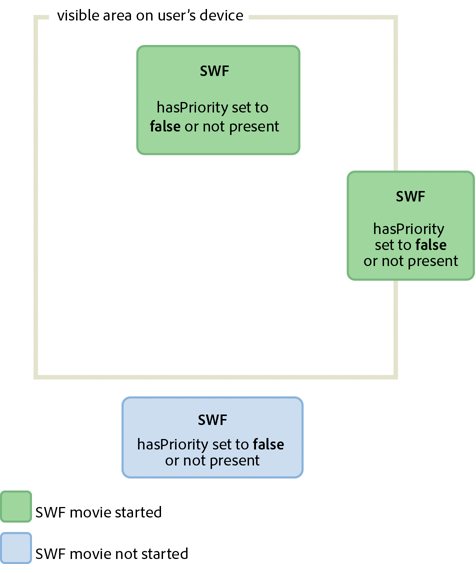
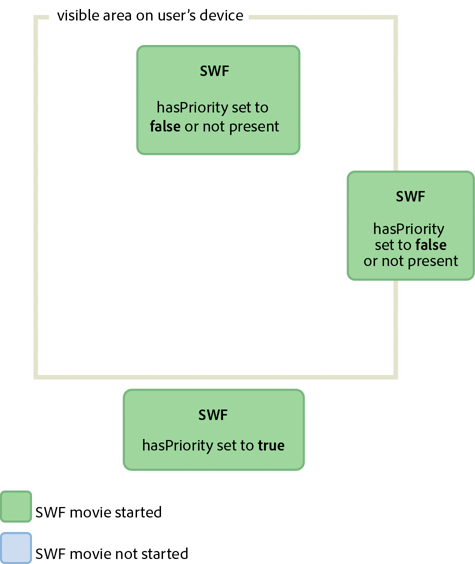

|

Another important area of focus for optimization is CPU
usage. Optimizing CPU processing improves performance, and as a
result, battery life on mobile devices.
Flash Player 10.1 enhancements for CPU usage
Flash Player 10.1 introduces two new features that help
save CPU processing. The features involve pausing and resuming SWF
content when it goes offscreen, and limiting the number of Flash
Player instances on a page.
Pause, throttle, and resume
Note:
The pause, throttle, and resume feature does not apply
to Adobe® AIR® applications.
To optimize CPU and battery usage, Flash Player 10.1 introduces
a new feature on related to inactive instances. This feature allows
you to limit CPU usage by pausing and resuming the SWF file when
content goes off and on the screen. With this feature, Flash Player
releases as much memory as possible by removing any objects that
can be recreated when the playing of content is resumed. Content
is considered offscreen when the entire content is offscreen.
Two scenarios cause the SWF content to be offscreen:
-
The user scrolls the page and causes the SWF content
to move offscreen.
In this case, if there is any audio or
video playback, content continues to play, but rendering is stopped.
If there is no audio or video playing, to ensure that the playback
or ActionScript execution is not paused, set the
hasPriority
HTML
parameter to true. However, keep in mind that SWF content rendering is
paused when content is offscreen or hidden, regardless of the value
of the
hasPriority
HTML parameter.
-
A tab is opened in the browser, which causes the SWF content
to move to the background.
In this case, regardless of the
value of the
hasPriority
HTML tag, the SWF content
is slowed down, or
throttled
, to between 2 and 8 fps. Audio
and video playback is stopped and no content rendering is processed
unless the SWF content becomes visible again.
For Flash Player 11.2 and later running on Windows and Mac desktop
browsers, you can use the ThrottleEvent in your application. Flash
Player dispatches a ThrottleEvent when Flash Player pauses, throttles,
or resumes play.
The ThrottleEvent is a broadcast event, which means that it is
dispatched by all EventDispatcher objects with a listener registered
for this event. For more information about broadcast events, see
the
DisplayObject
class.
Instance management
Note:
The instance management feature does not apply to Adobe® AIR® applications.

Use the
hasPriority
HTML parameter
to delay loading of offscreen SWF files.
Flash Player 10.1 introduces a new HTML parameter called
hasPriority
:
<param name="hasPriority" value="true" />
This feature limits the number of Flash Player instances that
are started on a page. Limiting the number of instances helps conserve
CPU and battery resources. The idea is to assign a specific priority
to SWF content, giving some content priority over other content
on a page. Consider a simple example: a user is browsing a website
and the index page hosts three different SWF files. One of them
is visible, another one is partially visible onscreen, and the last
one is offscreen, requiring scrolling. The first two animations
are started normally, but the last one is deferred until it becomes
visible. This scenario is the default behavior when the
hasPriority
parameter
is not present or set to
false
. To ensure that
a SWF file is started, even if it is offscreen, set the
hasPriority
parameter
to
true
. However, regardless of the value of the
hasPriority
parameter,
a SWF file that is not visible to the user always has its rendering
paused.
Note:
If available CPU resources become low, Flash
Player instances are no longer started automatically, even if the
hasPriority
parameter
is set to
true
. If new instances are created through
JavaScript after the page has been loaded, those instances will
ignore the
hasPriority
flag. Any 1x1 pixel or 0x0
pixel content is started, preventing helper SWF files from being
deferred if the webmaster fails to include the
hasPriority
flag.
SWF files can still be started when clicked, however. This behavior
is called “click to play.”
The following diagrams show the effects of setting the
hasPriority
parameter
to different values:

Effects of different values for the hasPriority parameter

Effects of different values for the hasPriority parameter
Sleep mode
Flash Player 10.1 and AIR 2.5 introduce a new feature on mobile
devices that helps save CPU processing, and as a result, battery
life. This feature involves the backlight found on many mobile devices.
For example, if a user running a mobile application is interrupted
and stops using the device, the runtime detects when the backlight
goes into sleep mode. It then drops the frame rate to 4 frames per second
(fps), and pauses rendering. For AIR applications, sleep mode also
begins when the application moves to the background.
ActionScript code continues to execute in sleep mode, similar
to setting the
Stage.frameRate
property to 4 fps.
But the rendering step is skipped, so the user cannot see that the
player is running at 4 fps. A frame rate of 4 fps was chosen, rather
than zero, because it allows all the connections to remain open (NetStream,
Socket, and NetConnection). Switching to zero would break open connections.
A 250 ms refresh rate was chosen (4 fps) because many device manufacturers
use this frame rate as their refresh rate. Using this value keeps
the frame rate of the runtime in the same ballpark as the device
itself.
Note:
When the runtime is in sleep mode, the
Stage.frameRate
property returns
the frame rate of the original SWF file, rather than 4 fps.
When the backlight goes back into on mode, rendering is resumed.
The frame rate returns to its original value. Consider a media player
application in which a user is playing music. If the screen goes
into sleep mode, the runtime responds based on the type of content
being played. Here is a list of situations with the corresponding
runtime behavior:
-
The backlight goes into sleep mode and non-A/V content
is playing: The rendering is paused and the frame rate is set to
4 fps.
-
The backlight goes into sleep mode and A/V content is playing:
the runtime forces the backlight to be always on, continuing the
user experience.
-
The backlight goes from sleep mode to on mode: the runtime
sets the frame rate to the original SWF file frame rate setting
and resumes rendering.
-
Flash Player is paused while A/V content is played: Flash
Player resets the backlight state to the default system behavior
because A/V is no longer playing.
-
Mobile device receives a phone call while A/V content is
played: The rendering is paused and the frame rate is set to 4 fps.
-
The backlight sleep mode is disabled on a mobile device:
the runtime behaves normally.
When the backlight goes into sleep mode, rendering pauses and
the frame rate slows down. This feature saves CPU processing, but
it cannot be relied upon on to create a real pause, as in a game
application.
Note:
No ActionScript event is dispatched when the runtime enters
or leaves sleep mode.
Freezing and unfreezing objects
Freeze and unfreeze objects properly by
using the
REMOVED_FROM_STAGE
and
ADDED_TO_STAGE
events.
To optimize your code, always freeze and unfreeze your objects.
Freezing and unfreezing are important for all objects, but are especially
important for display objects. Even if display objects are no longer
in the display list and are waiting to be garbage collected, they
could still be using CPU-intensive code. For example, they can still
be using Event.ENTER_FRAME. As a result, it is critical to freeze
and unfreeze objects properly with the
Event.REMOVED_FROM_STAGE
and
Event.ADDED_TO_STAGE
events.
The following example shows a movie clip playing on stage that interacts
with the keyboard:
// Listen to keyboard events
stage.addEventListener(KeyboardEvent.KEY_DOWN, keyIsDown);
stage.addEventListener(KeyboardEvent.KEY_UP, keyIsUp);
// Create object to store key states
var keys:Dictionary = new Dictionary(true);
function keyIsDown(e:KeyboardEvent):void
{
// Remember that the key was pressed
keys[e.keyCode] = true;
if (e.keyCode==Keyboard.LEFT || e.keyCode==Keyboard.RIGHT)
{
runningBoy.play();
}
}
function keyIsUp(e:KeyboardEvent):void
{
// Remember that the key was released
keys[e.keyCode] = false;
for each (var value:Boolean in keys)
if ( value ) return;
runningBoy.stop();
}
runningBoy.addEventListener(Event.ENTER_FRAME, handleMovement);
runningBoy.stop();
var currentState:Number = runningBoy.scaleX;
var speed:Number = 15;
function handleMovement(e:Event):void
{
if (keys[Keyboard.RIGHT])
{
e.currentTarget.x += speed;
e.currentTarget.scaleX = currentState;
} else if (keys[Keyboard.LEFT])
{
e.currentTarget.x -= speed;
e.currentTarget.scaleX = -currentState;
}
}
When the Remove button is clicked, the movie clip is removed
from the display list:
// Show or remove running boy
showBtn.addEventListener (MouseEvent.CLICK,showIt);
removeBtn.addEventListener (MouseEvent.CLICK,removeIt);
function showIt (e:MouseEvent):void
{
addChild (runningBoy);
}
function removeIt(e:MouseEvent):void
{
if (contains(runningBoy)) removeChild(runningBoy);
}
Even when removed from the display list, the movie clip still
dispatches the
Event.ENTER_FRAME
event. The movie
clip still runs, but it is not rendered. To handle this situation
correctly, listen to the proper events and remove event listeners,
to prevent CPU-intensive code from being executed:
// Listen to Event.ADDED_TO_STAGE and Event.REMOVED_FROM_STAGE
runningBoy.addEventListener(Event.ADDED_TO_STAGE,activate);
runningBoy.addEventListener(Event.REMOVED_FROM_STAGE,deactivate);
function activate(e:Event):void
{
// Restart everything
e.currentTarget.addEventListener(Event.ENTER_FRAME,handleMovement);
}
function deactivate(e:Event):void
{
// Freeze the running boy - consumes fewer CPU resources when not shown
e.currentTarget.removeEventListener(Event.ENTER_FRAME,handleMovement);
e.currentTarget.stop();
}
When the Show button is pressed, the movie clip is restarted,
it listens to
Event.ENTER_FRAME
events again, and
the keyboard correctly controls the movie clip.
Note:
If a display object is removed from the display
list, setting its reference to
null
after removing
it does not ensure that the object is frozen. If the garbage collector doesn’t
run, the object continues to consume memory and CPU processing,
even though the object is no longer displayed. To make sure that
the object consumes the least CPU processing possible, make sure
that you completely freeze it when removing it from the display
list.
Starting with Flash Player 10 and AIR 1.5, the following behavior
also occurs. If the playhead encounters an empty frame, the display
object is automatically frozen even if you did not implement any
freezing behavior.
The concept of freezing is also important when loading remote
content with the Loader class. When using the Loader class with
Flash Player 9 and AIR 1.0, it was necessary to manually freeze
content by listening to the
Event.UNLOAD
event dispatched
by the LoaderInfo object. Every object had to be manually frozen, which
was a non-trivial task. Flash Player 10 and AIR 1.5 introduced an
important new method on the Loader class called
unloadAndStop()
.
This method allows you to unload a SWF file, automatically freeze
every object in the loaded SWF file, and force the garbage collector
to run.
In the following code, the SWF file is loaded and then unloaded
using the
unload()
method, which requires more
processing and manual freezing:
var loader:Loader = new Loader();
loader.load ( new URLRequest ( "content.swf" ) );
addChild ( loader );
stage.addEventListener ( MouseEvent.CLICK, unloadSWF );
function unloadSWF ( e:MouseEvent ):void
{
// Unload the SWF file with no automatic object deactivation
// All deactivation must be processed manually
loader.unload();
}
A best practice is to use the
unloadAndStop()
method,
which handles the freezing natively and forces the garbage collecting
process to run:
var loader:Loader = new Loader();
loader.load ( new URLRequest ( "content.swf" ) );
addChild ( loader );
stage.addEventListener ( MouseEvent.CLICK, unloadSWF );
function unloadSWF ( e:MouseEvent ):void
{
// Unload the SWF file with automatic object deactivation
// All deactivation is handled automatically
loader.unloadAndStop();
}
The following actions occur when the
unloadAndStop()
method
is called:
-
Sounds are stopped.
-
Listeners registered to the SWF file’s main timeline are
removed.
-
Timer objects are stopped.
-
Hardware peripheral devices (such as camera and microphone)
are released.
-
Every movie clip is stopped.
-
Dispatching of
Event.ENTER_FRAME
,
Event.FRAME_CONSTRUCTED
,
Event.EXIT_FRAME
,
Event.ACTIVATE
and
Event.DEACTIVATE
is stopped.
Activate and deactivate events
Use
Event.ACTIVATE
and
Event.DEACTIVATE
events
to detect background inactivity and optimize your application appropriately.
Two events (
Event.ACTIVATE
and
Event.DEACTIVATE
)
can assist you in fine-tuning your application so that it uses the
fewest CPU cycles possible. These events allow you to detect when
the runtime gains or loses focus. As a result, code can be optimized
to react to context changes. The following code listens to both
events and dynamically changes the frame rate to zero when the application
loses its focus. For example, the animation can lose focus when
the user switches to another tab or puts the application into the
background:
var originalFrameRate:uint = stage.frameRate;
var standbyFrameRate:uint = 0;
stage.addEventListener ( Event.ACTIVATE, onActivate );
stage.addEventListener ( Event.DEACTIVATE, onDeactivate );
function onActivate ( e:Event ):void
{
// restore original frame rate
stage.frameRate = originalFrameRate;
}
function onDeactivate ( e:Event ):void
{
// set frame rate to 0
stage.frameRate = standbyFrameRate;
}
When the application gains focus again, the frame rate is reset
to its original value. Instead of changing the frame rate dynamically,
you could also consider making other optimizations, such as freezing
and unfreezing objects.
The activate and deactivate events allow you to implement a similar
mechanism to the "Pause and Resume" feature sometimes found on mobile
devices and Netbooks.
Mouse interactions
Consider disabling mouse interactions,
when possible.
When using an interactive object, such as a MovieClip or Sprite
object, the runtime executes native code to detect and handle mouse
interactions. Detecting mouse interaction can be CPU-intensive when
many interactive objects are shown onscreen, especially if they
overlap. An easy way to avoid this processing is to disable mouse
interactions on objects that do not require any mouse interaction.
The following code illustrates the use of the
mouseEnabled
and
mouseChildren
properties:
// Disable any mouse interaction with this InteractiveObject
myInteractiveObject.mouseEnabled = false;
const MAX_NUM:int = 10;
// Create a container for the InteractiveObjects
var container:Sprite = new Sprite();
for ( var i:int = 0; i< MAX_NUM; i++ )
{
// Add InteractiveObject to the container
container.addChild( new Sprite() );
}
// Disable any mouse interaction on all the children
container.mouseChildren = false;
When possible, consider disabling mouse interaction, which helps
your application to use less CPU processing, and as a result, reduce
battery usage on mobile devices.
Timers versus ENTER_FRAME events
Choose either timers or
ENTER_FRAME
events,
depending on whether content is animated.
Timers are preferred over
Event.ENTER_FRAME
events
for non-animated content that executes for a long time.
In ActionScript 3.0, there are two ways of calling a function
at specific intervals. The first approach is to use the
Event.ENTER_FRAME
event
dispatched by display objects (DisplayObject). The second approach
is to use a timer. ActionScript developers frequently use the
ENTER_FRAME
event
approach. The
ENTER_FRAME
event is dispatched on
every frame. As a result, the interval at which the function is
called is related to the current frame rate. The frame rate is accessible
through the
Stage.frameRate
property. However,
in some cases, using a timer can be a better choice than using the
ENTER_FRAME
event.
For example, if you don’t use animation, but would like your code
called at specific intervals, using a timer can be a better choice.
A timer can behave in a similar way to an
ENTER_FRAME
event,
but an event can be dispatched without being tied to the frame rate.
This behavior can offer some significant optimization. Consider
a video player application as an example. In this case, you do not
need to use a high frame rate, because only the application controls
are moving.
Note:
The frame rate does not affect the video, because the video
is not embedded in the timeline. Instead, the video is loaded dynamically
through progressive downloading or streaming.
In this example, the frame rate is set to a low value of 10 fps.
The timer updates the controls at a rate of one update per second.
The higher update rate is made possible by the
updateAfterEvent()
method,
which is available on the TimerEvent object. This method forces
the screen to be updated each time the timer dispatches an event,
if needed. The following code illustrates the idea:
// Use a low frame rate for the application
stage.frameRate = 10;
// Choose one update per second
var updateInterval:int = 1000;
var myTimer:Timer = new Timer(updateInterval,0);
myTimer.start();
myTimer.addEventListener( TimerEvent.TIMER, updateControls );
function updateControls( e:TimerEvent ):void
{
// Update controls here
// Force the controls to be updated on screen
e.updateAfterEvent();
}
Calling the
updateAfterEvent()
method does not
modify the frame rate. It just forces the runtime to update the
content onscreen that has changed. The timeline still runs at 10
fps. Remember that timers and
ENTER_FRAME
events
are not perfectly accurate on low performance devices, or if event
handler functions contain code that requires heavy processing. Just
like the SWF file frame rate, the update frame rate of the timer
can vary in some situations.
Minimize the number of Timer objects
and registered
enterFrame
handlers in your application.
Each
frame, the runtime dispatches an
enterFrame
event
to each display object in its display list. Although you can register
listeners for the
enterFrame
event with multiple
display objects, doing so means that more code is executed each
frame. Instead, consider using a single centralized
enterFrame
handler that
executes all the code that is to run each frame. By centralizing
this code, it is easier to manage all the code that is running frequently.
Likewise,
if you’re using Timer objects, there is overhead associated with
creating and dispatching events from multiple Timer objects. If
you must trigger different operations at different intervals, here
are some suggested alternatives:
-
Use a minimal number
of Timer objects and group operations according to how frequently
they happen.
For example, use one Timer for frequent operations,
set to trigger every 100 milliseconds. Use another Timer for less-frequent
or background operations, set to trigger every 2000 milliseconds.
-
Use a single Timer object, and have operations triggered
at multiples of the Timer object’s
delay
property
interval.
For example, suppose you have some operations that
are expected to happen every 100 milliseconds, and others that you
want to happen every 200 milliseconds. In that case, use a single
Timer object with a
delay
value of 100 milliseconds.
In the
timer
event handler, add a conditional statement
that only runs the 200-millisecond operations every other time.
The following example demonstrates this technique:
var timer:Timer = new Timer(100);
timer.addEventListener(TimerEvent.Timer, timerHandler);
timer.start();
var offCycle:Boolean = true;
function timerHandler(event:TimerEvent):void
{
// Do things that happen every 100 ms
if (!offCycle)
{
// Do things that happen every 200 ms
}
offCycle = !offCycle;
}
Stop Timer objects when not in use.
If
a Timer object’s
timer
event handler only performs
operations under certain conditions, call the Timer object’s
stop()
method
when none of the conditions are true.
In
enterFrame
event
or Timer handlers, minimize the number of changes to the appearance
of display objects that cause the screen to be redrawn.
Each
frame, the rendering phase redraws the portion of the stage that
has changed during that frame. If the redraw region is large, or
if it’s small but contain a large quantity or complex display objects,
the runtime needs more time for rendering. To test the amount of
redrawing required, use the “show redraw regions” feature in the
debug Flash Player or AIR.
For more information about improving performance for
repeated actions, see the following article:
Tweening syndrome
To save CPU power, limit the use of tweening,
which saves CPU processing, memory, and battery life.
Designers and developers producing content for Flash on the desktop
tend to use many motion tweens in their applications. When producing
content for mobile devices with low performance, try to minimize
the use of motion tweens. Limiting their use helps content run faster
on low-tier devices.
|
|
|